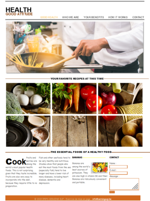
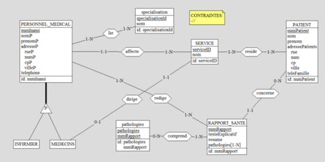
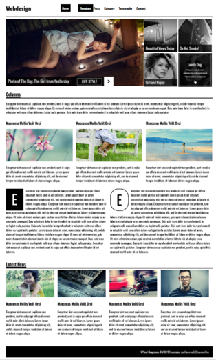

<section>
  <!--  class content limits the width from the section to 1600px     -->
  <div class="content">
     <!--  Title from the page presenting some works of mine          -->
     <h2>Création de Site Web et Base de données</h2>

      <!-- 7 columns all containing different images except the one before the last one which contains the text "ETC...". All these columns have different widths and size, the objective being 4 small images and a text between 2 big images       -->
      <!--  first column, the first big image Capture-health.PNG         -->
      <div class="col col-1-12">
          
      </div>
      <!--  second column, the first small image capture-projet-de-groupe-base-de-donnee.PNG         -->
      <div class="col col-2-12">
          
      </div>
      <!--  third column, the second small image Capture-projet-hopital.PNG         -->
      <div class="col col-2-12">
          
      </div>
      <!--  fourth column, the third small image Capture-reseau.png         -->
      <div class="col col-1-12 margin-travaux">
          
      </div>
      <!--  fifth column, the fourth small image Capture-seraing.png         -->
      <div class="col col-2-12 margin-travaux">
          
      </div>
      <!--  sixth column, text "ETC..."         -->
      <div class="col col-0-12 center margin-travaux">
          <a href="#etc" class="ETC blue-color"><p>ETC ...</p></a>
      </div>
      <!--  seventh and also last column, the second big image Capture-webdesign.PNG slightly up to be aligned with the others images due to the class .capture-design        -->
      <div class="col col-1-12 last">
          
      </div>

      <!-- clear page disposition      -->
      <div class="clear"></div>

      <!--  informative text about the previous columns containing images and some text         -->
      <div class="text-travaux center">
          <p>Les divers exemples que vous voyez ci-dessus ont été réalisé lors de la formation “ Développeur Web Seraing Sup “ et constituent une représentation imagé de mes capacités.</p>
          <p class="brown-color">Pour plus d’amples, cliquez sur le lien ETC ...</p>
      </div>

  </div>
</section>
